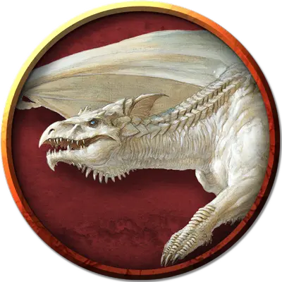

Молодой белый дракон
Young White Dragon
Большой Дракон, хаотично-злой

Класс Доспеха 17 (природный доспех)
Хиты 133 (14к10 + 56)
Скорость 40 футов, плавая 40 футов, летая 80 футов, копая 20 футов
| мод | спас | ||
|---|---|---|---|
| СИЛ | 18 | +4 | +4 |
| ЛОВ | 10 | +0 | +3 |
| ТЕЛ | 18 | +4 | +7 |
| мод | спас | ||
|---|---|---|---|
| ИНТ | 6 | −2 | −2 |
| МДР | 11 | +0 | +3 |
| ХАР | 12 | +1 | +4 |
Навыки Восприятие +6, Скрытность +3
Иммунитет к урону холод
Чувства слепое зрение 30 футов, тёмное зрение 120 футов, пассивное Восприятие 16
Языки Общий, Драконий
Опасность 6 (2300 опыта)
Бонус мастерства +3
Среда обитания Арктика
Особенности
Хождение по льду. Дракон может перемещаться по ледяным поверхностям и лазать по ним, не совершая проверок характеристик. Кроме того, труднопроходимая местность, вызванная льдом или снегом, не стоит дополнительного перемещения.
Действия
Мультиатака. Дракон совершает три атаки: одну укусом, и две когтями.
Укус. Рукопашная атака оружием: +7 к попаданию, досягаемость 10 футов, одна цель. Попадание: 15 (2к10 + 4) колющего урона плюс 4 (1к8) урона холода.
Коготь. Рукопашная атака оружием: +7 к попаданию, досягаемость 5 футов, одна цель. Попадание: 11 (2к6 + 4) рубящего урона.
Холодное дыхание (перезарядка 5–6). Дракон выдыхает волну ледяного воздуха 30-футовым конусом. Все существа в этой области должны совершить спасбросок Телосложения Сл 15, получая 45 (10к8) урона холодом при провале, или половину этого урона при успехе.
Опциональные правила
Драконы и врождённое колдовство. Драконы обладают врождёнными способностями к колдовству, и могут с возрастом осваивать новые заклинания при использовании этого опционального правила.
Молодые и более старые драконы могут накладывать количество заклинаний, равное их модификатору Харизмы. Каждое заклинание может быть наложено лишь один раз за день, не требуя материальных компонентов, и уровень заклинания не может превышать трети показателя опасности дракона (округляя в меньшую сторону).
Бонус к попаданию атак заклинаниями дракона равен его бонусу мастерства + его бонус Харизмы. Сл спасбросков от заклинаний дракона равна 8 + его бонус мастерства + его модификатор Харизмы. (Monster Manual)
Драконы и врождённое колдовство. Этот дракон от природы может накладывать одно заклинание, 1/день каждое, и ему не требуются для этого материальные компоненты. Уровень каждого заклинания не может быть выше 2-го. Заклинание дракона, имеют Сл спасброска 12, и он имеет +4 к попаданию атаками заклинаниями.
Ниже приведен список предлагаемых заклинаний, но вы также можете выбрать заклинания, отражающие характер дракона. Дракон, который от природы накладывает заклинания друидов, ведёт себя иначе, чем тот, кто накладывает заклинания колдуна. Вы также можете дать дракону заклинания более высокого уровня, чем позволяет это правило, но такая настройка может повысить ПО дракона — особенно если эти заклинания наносят урон или накладывают состояния на цели.
• Порыв ветра [gust of wind]. (Fizban's Treasury of Dragons)
Персонализация дракона. Как уже говорилось в «Руководстве Мастера», вы можете настроить блок статистики любого дракона, чтобы отразить его уникальный характер. Незначительные изменения, такие как приведенные ниже, легко сделать, и они не влияют на ПО дракона. (Fizban's Treasury of Dragons)
Языки. Большинство драконов предпочитают говорить на Драконьем, но для общения с союзниками и приспешниками изучают Общий. Но, учитывая высокий Интеллект и продолжительный срок жизни, драконы могут легко выучить дополнительные языки. Вы можете добавить языки в блок статистики дракона.
Навыки. Большинство драконов владеют навыками Восприятие и Скрытность, а многие драконы владеют дополнительными навыками. Как и в случае с языками, вы можете изменить список навыков дракона (даже удвоить бонус мастерства), чтобы отразить его интересы и занятия. Вы также можете наделить дракона владениями инструментами, особенно если дракон проводит время в гуманоидной форме.
Заклинания. Опциональное правило «Бестиария» о том, чтобы сделать драконов с врожденным колдовством, — это простой способ добавить драконам разнообразия, не влияя на их ПО. В Главе 5 «Дракономикон» предлагаются списки заклинаний для разных видов драконов, но вы также можете выбрать заклинания, отражающие характер дракона. Дракон, который от природы накладывает заклинания друидов, ведёт себя иначе, чем тот, кто накладывает заклинания колдуна. Вы также можете дать дракону заклинания более высокого уровня, чем позволяет это правило, но такая настройка может повысить ПО дракона — особенно если эти заклинания наносят урон или накладывают состояния на цели.
Другие черты и действия. Вы можете заимствовать черты и действия у других монстров, чтобы придать дракону уникальную изюминку. Рассмотрим эти примеры:
Изменение формы. Вы можете решить, что дракон приобретает это действие в более раннем возрасте, чем обычно, особенно если вы хотите представить в своей кампании дракона в гуманоидной форме. (См. металлические драконы).
Поглощение урона. Вы можете решить, что красный или золотой дракон не только не получает урон от огня, но и исцеляется от него. (См. мясной голем [flesh golem]).
Облёт. Дракон - проворный летун, быстро вылетающий из зоны досягаемости врагов. (См. перитон [peryton]).
Подражание. Изображение персонажей или их союзников может стать забавным трюком для хитрого дракона. (См. кенку [kenku]).
Омоложение. Вы можете решить, что драконы в вашей кампании, будучи неотъемлемой частью Материального плана, почти невозможно уничтожить. Жизненная сущность дракона может храниться в яйце, из которого он появился на свет, в его кладе или в пещерном зале в центре мира, так же как сущность лича спрятана в филактерии. (См. лич [lich]).
Особые чувства. У большинства драконов есть слепое зрение и темное зрение. Вы можете улучшить зрение до истинного зрения или наделить дракона скоростью рытья или чувством вибрации. (См. зрение и свет).
Прокладывание туннеля. Эта особенность может быть присуща любому дракону, обладающему скоростью копания - он может двигаться сквозь твёрдую породу, оставляя за собой туннель. (См. бурый увалень [umber hulk]).
Описание
Меньшие, менее разумные и наиболее звероподобные из цветных драконов, белые драконы обитают в холодных условиях, предпочитая снежные области и ледяные горы. Эти драконы злобны, жестоки и ведомы голодом и жадностью.
Белые драконы отличаются диким взглядом, обтекаемой формой тела и острым хохолком. Чешуя вирмлингов белых драконов сверкает идеальной белизной. С возрастом их блеск исчезает, и некоторые из чешуек темнеют, к старости создавая бледно-голубые и светло-серые пятна. Такая расцветка помогает драконам во время охоты спрятаться среди льдов и камней или затеряться на фоне затянутого тучами неба.
Дикие и мстительные. Белым драконам не хватает хитрости и тактики, присущей другим драконам. Но их звериная природа делает их лучшими охотниками среди драконьего племени, полностью сосредоточенными на выживании и уничтожении врагов. Белые драконы питаются только замороженной пищей, поглощая существ, убитых их дыханием, пока те всё еще твёрдые и замороженные. Не съеденных убитых они заключают в лёд или закапывают в снег у логова. Обнаружение такого «запаса» служит верным знаком того, что белый дракон обитает поблизости.
Белые драконы также держат тела своих величайших врагов в качестве трофеев, замораживая их трупы на видных местах, чтобы после, глядя на них, злорадствовать. Останки великанов, реморазов и других драконов часто располагаются на виду в логове белого дракона, как предупреждение нарушителям.
Белые драконы, хотя и не наделены выдающимся интеллектом, но обладают экстраординарной памятью. Они помнят каждую мельчайшую обиду и поражение, которое они познали, и вершат зловещие расправы ради мести своим противникам. Ими часто оказываются серебряные драконы, чьи логова располагаются на схожих территориях. Белые драконы, как и другие драконы, могут говорить, но делают это с неохотой и лишь когда это крайне необходимо.
Одиночки. Белые драконы избегают других драконов, кроме белых драконов противоположного пола. Но даже найдя себе пару, белые драконы держатся вместе лишь до тех пор, пока не зачнут потомков, и после опять отправляются в изоляцию.
Белые драконы не терпят соперников возле своего логова. Вследствие этого, белый дракон нападает на других существ без предупреждения, считая их либо слишком слабыми, либо слишком сильными, чтобы жить. Единственные существа, которые обычно служат белым драконам — это разумные гуманоиды, которые достаточно сильны, чтобы пережить гнев дракона, и смириться с регулярными потерями из-за его голода. Обычно это поклоняющиеся дракону кобольды, которые часто встречаются в драконьих логовах.
Могучие существа иногда подчиняют белых драконов с помощью физической или волшебной силы. Ледяные великаны выходят на бой с белыми драконами, чтобы доказать свою силу и упрочить своё положение в клане. Обломки их костей устилают логова многих белых драконов. Тем не менее, белый дракон, побеждённый ледяным великаном, часто становится его слугой, принимая более могучее существо своим хозяином в обмен на утверждение своего собственного господства над другими существами, которые служат великану или выступают против него.
Сокровища во льдах. Белые драконы любят холодный блеск льда и предпочитают сокровища, обладающие схожими свойствами, в частности — бриллианты. Однако в логовах, расположенных в ледяных удалённых местах, сокровища чаще состоят из бивней моржей и мамонтов, скульптур из китовых костей, носовых украшений кораблей, шкур и волшебных предметов, захваченных у излишне смелых искателей приключений.
Монеты и драгоценные камни лежат, разбросанными по всему логову белого дракона, сверкая, как звезды, когда свет падает на них. Большие сокровища и сундуки покрыты слоями инея от дыхания белого дракона или находятся в безопасности под толстым слоем прозрачного льда. Огромная сила дракона позволяет ему легко добраться до своего богатства, в то время как более слабые существа должны будут потратить многие часы, раскалывая или растапливая лёд, чтобы добраться до основных сокровищ дракона.
Безупречная память белого дракона даёт ему возможность вспомнить, как он получил каждую монету, самоцвет и каждый магический предмет в своей сокровищнице, что связывает каждый предмет с определённой победой. Белых драконов, как известно, очень сложно подкупить, поскольку любые такие предложения воспринимаются как сомнение в их способности просто убить предлагающего откуп и присвоить его сокровища.
См. дополнительно статью: "Бестиарий: Драконы"